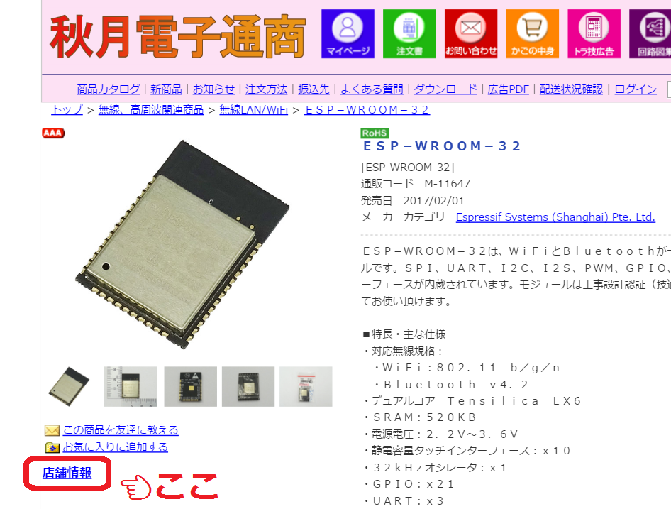
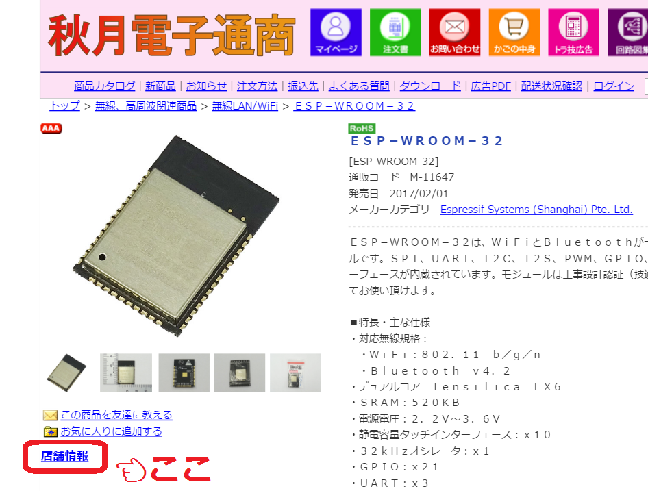
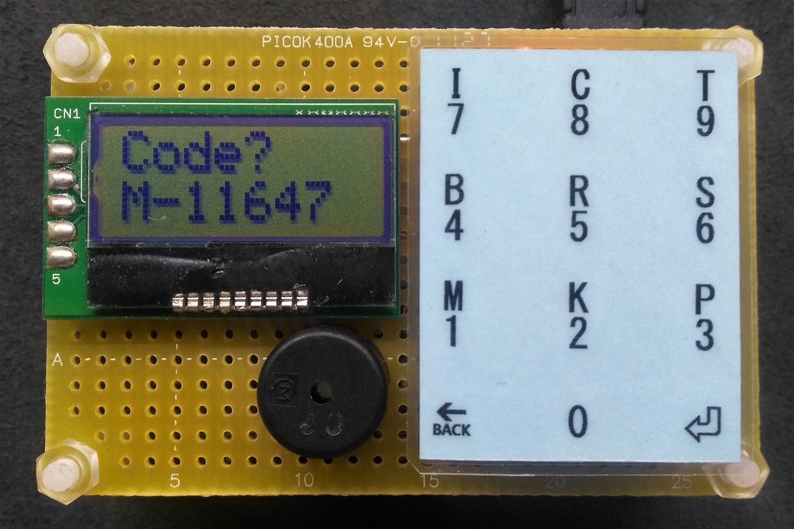
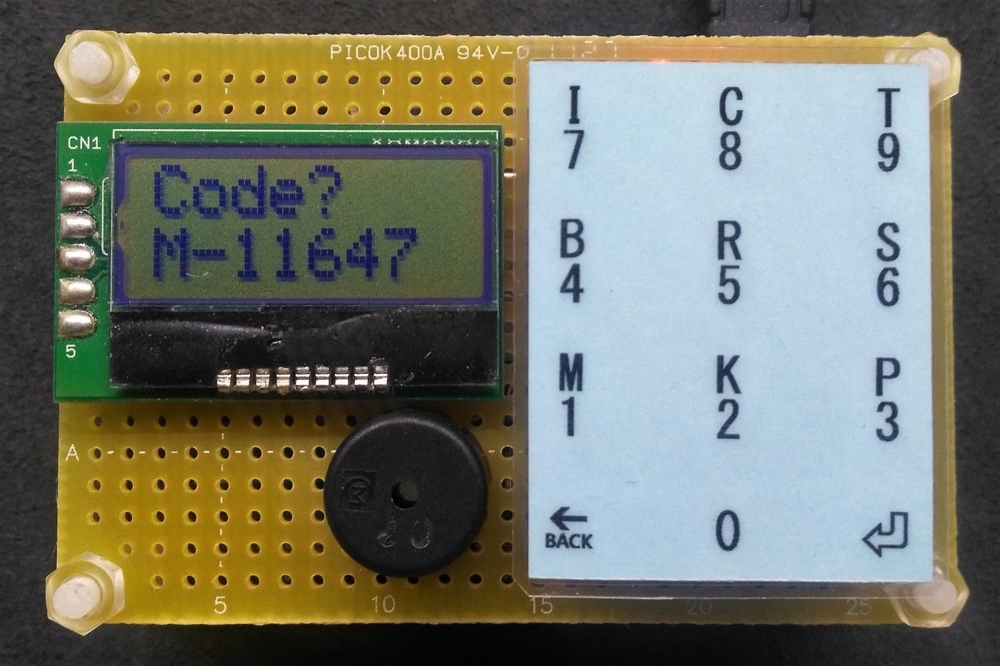
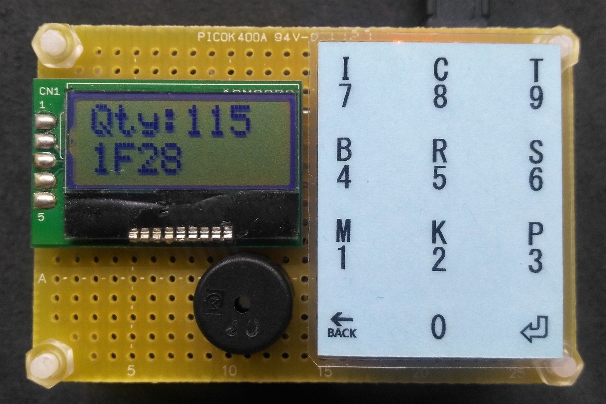
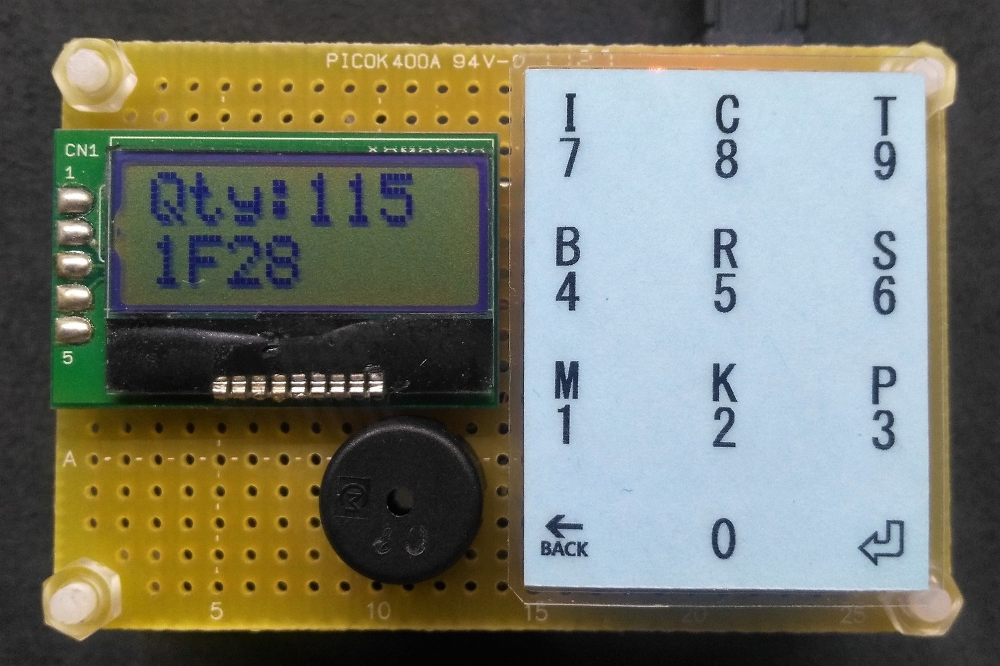

秋月の売場表示器
まずはじめに
秋月の通販サイトとESP-WROOM-32


秋月の通販サイトが進化
少し前から，秋月の通販サイトで店舗の在庫数と売場の場所が見れるようになりました． 商品写真の下の「店舗情報」というボタンを押すとポップアップが現れ，在庫数と売場が表示されます．
ハイスペックなWiFiモジュール
先日，ESP-WROOM-32というWiFiモジュールが発売されました．32bitマイコンで，240MHz動作，なんとデュアルコアです．電子工作の世界にもマルチコアがやってきました！！
作ったもの
通販コードを入力


棚番と在庫数を表示


通販コードから売場を検索
今回はそのESP-WROOM-32を使って，便利なグッズを作りました．
秋月の通販コードを入力すると，秋葉原店での在庫数と，売場番号が表示されます．
在庫と売場情報の取得方法
WiFi経由で秋月のサーバーに接続して，HTMLを入手し，それをパースして在庫数と売場を得ています．WiFiモジュールはインターネットに接続できるので，電子工作の可能性がぐっと広がります．